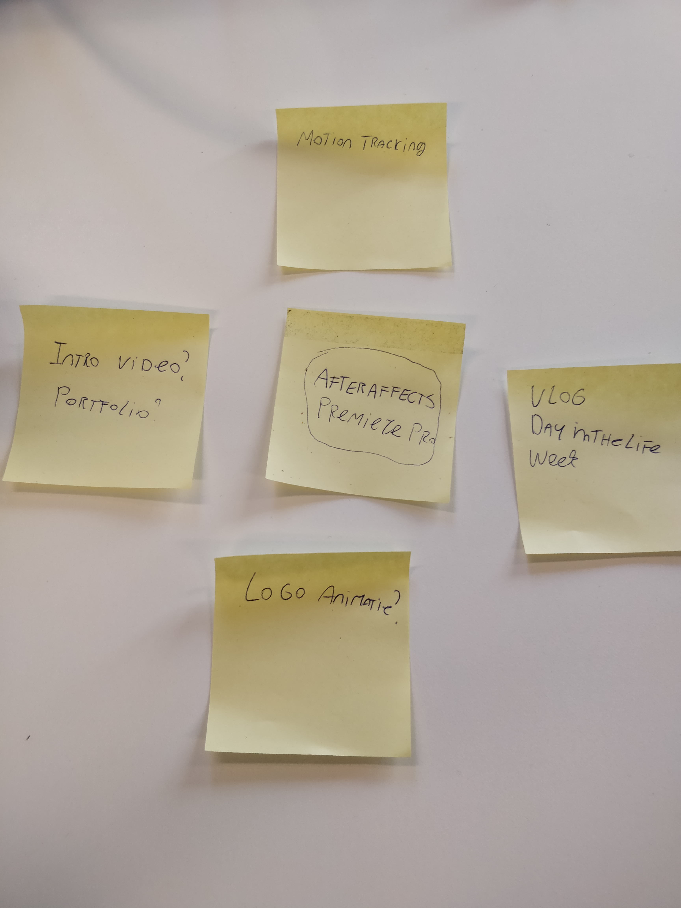
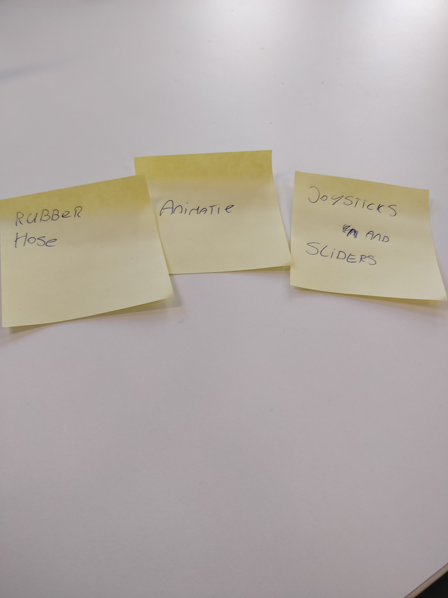
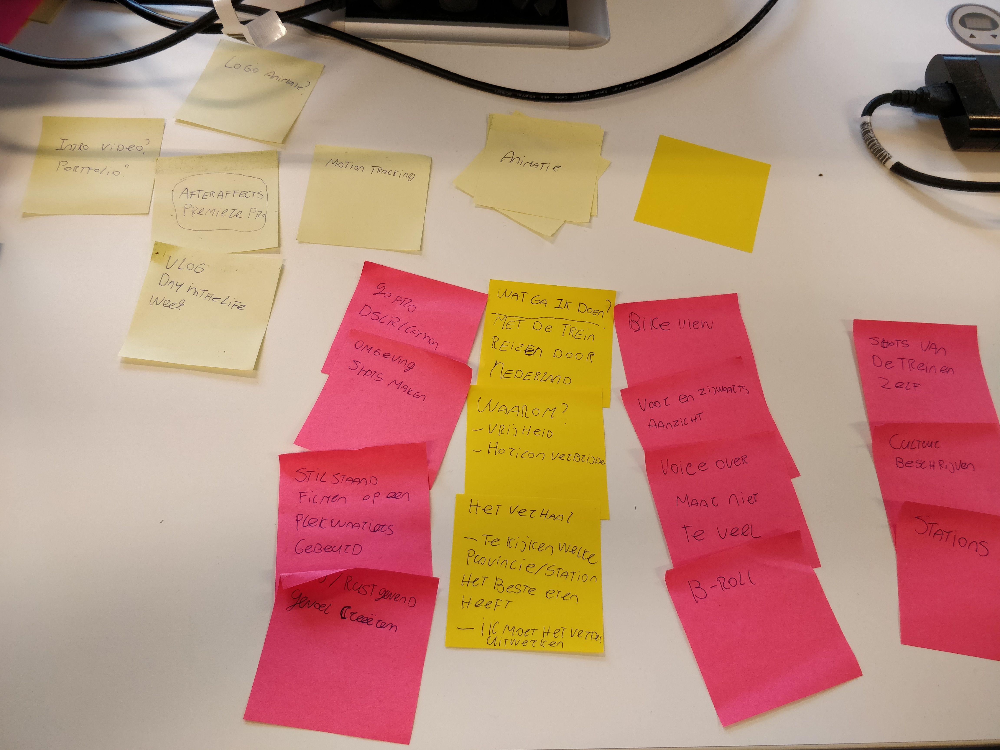
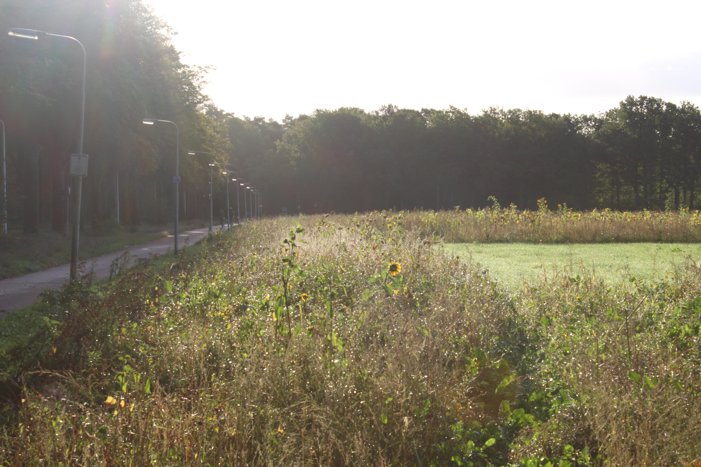
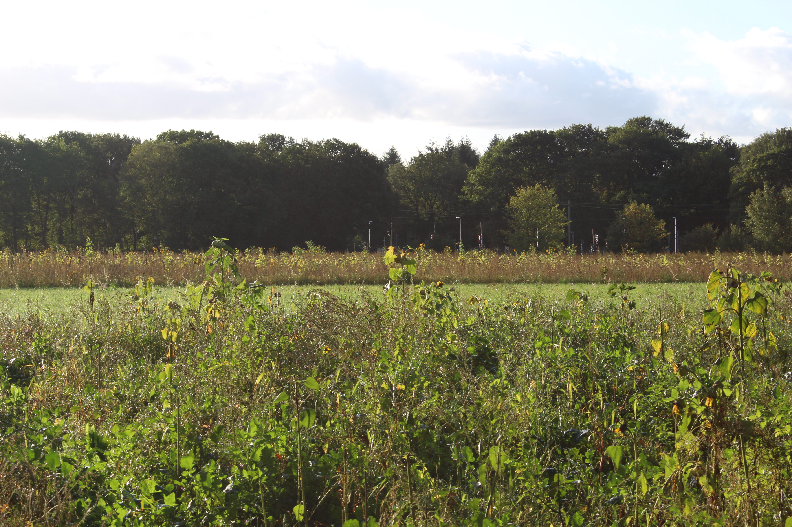
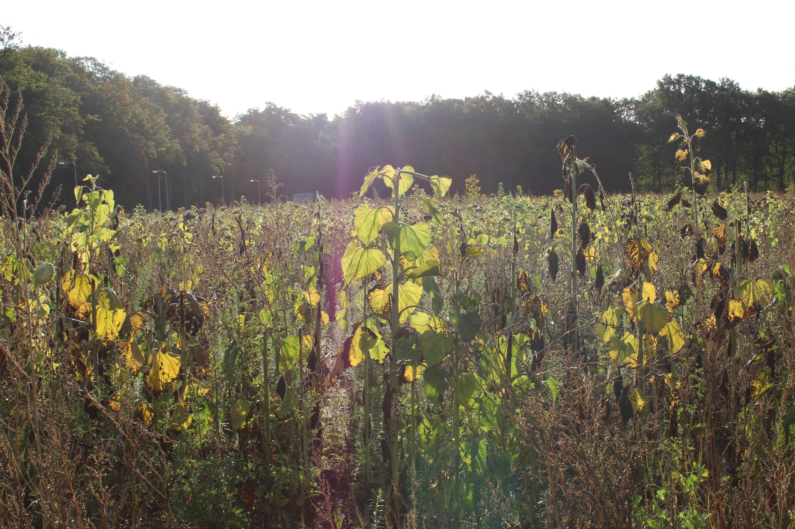
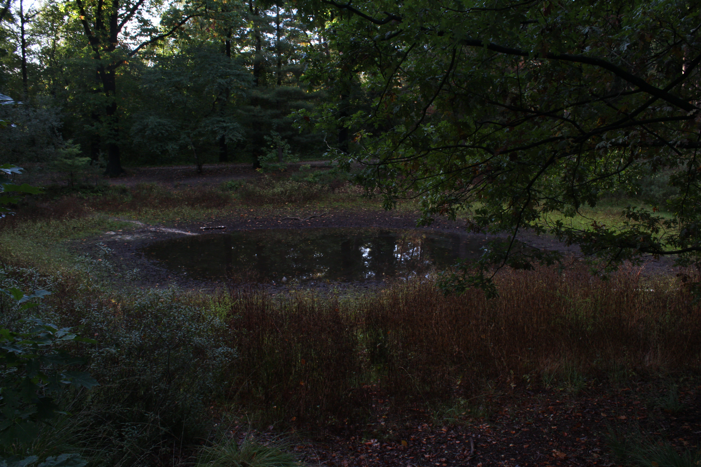

Als eerste stap in mijn selfieweek proces heb ik gebrainstormd over wat ik in de selfie weken wou maken. Ik heb over verschillende onderwerpen nagedacht. Ik wist wel dat ik graag iets met video wilde doen. Aangezien ik zelf veel op YouTube
& Netflix zit, ben ik ook altijd met beeld bezig. Ik vind videografie ook heel interessant aangezien je veel kan doen op het gebied van filmen en editen daarvan. Voornamelijk het vlog aspect vind ik interessant. Aangezien je dit op
verschillende manieren kan doen. Je kan een vlog maken waarmee je met je kijker praat. Maar je kan ook de focus op de omgeving leggen. Daarin heb je dus veel vrijheid. Dus ik wist al vrij snel wat ik wou gaan doen. Ik heb wel nagedacht om
met animatie aan de slag te gaan. Aangezien het maken van een kleine animatiefilm mij ook wel vet leek. Alleen leek me dit niet het vetste idee. En de manier die ik wou toepassen zou me ook het nodige geld kosten.



Het Idee
Uiteindelijk kwam ik op het idee om een video te maken van een stedentrip door Nederland. Dit wilde ik dan doen als een mini-documentaire/vlog. Ik wou graag meer van de wereld zien. Aangezien ik eigenlijk in mijn vrije tijd altijd thuis
zit. Ik vind het fijn dat ik thuis kan komen en dat ik me daar veilig en fijn voel. Maar tegelijkertijd wil ik ook meer van de wereld zien en nieuwe dingen ervaren. Ik stap dan wel uit mijn comfort zone om een persoonlijk doel te bereiken.
Het doel van deze week
Mijn doel van de eerste selfie week was om inspiratie op te zoeken en mezelf bekend te maken met filmen en editen. Met editen heb ik al een beetje ervaring want ik heb wat montages en muziek op YouTube gezet. Maar met filmen heb ik
eigenlijk nog geen ervaring. Dus ik wou mezelf bekend maken met het op pad gaan en daadwerkelijk filmen. Mijn idee voor deze week was om mijn ochtend routine en trip naar school te filmen. Hiervoor wil ik dan ook gebruik maken van meerdere
camera’s.
Inspiratie
Voordat ik daadwerkelijk mijn stedentrip kon gaan filmen ben ik mezelf eerst beter gaan verdiepen in film. Hiervoor heb ik inspiratie gezocht in verschillende bronnen.
Joe Hickson is een content creator op YouTube waarin hij zich voornamelijk met film en design bezighoudt. In deze video’s heeft hij het vaak over waar hij momenteel aan werkt en zijn gedachten gang daarbij. Ook werkt hij voor The Yogscast
als video editor/designer/cameraman. Joe is mijn grootste inspiratiebron omdat we allebei dezelfde visie hebben. Het is lastig om precies te beschrijven waarom maar hij motiveert en inspireert mij door de opleiding heen. Hij is ook pas net
afgestudeerd van zijn opleiding en is dus ook maar een paar jaar ouder dan mij. Hij houdt zich ook bezig met veel dingen die ook op deze opleiding terugkomen wat wel handig is.
Hat Films
Hat Films zijn een groep van 3 content creators op YouTube. Zij maken heel veel verschillende soorten video’s waaronder challenges, gaming video’s maar ook vlogs. Deze vlogs vind ik altijd goed bewerkt en de beelden zijn ook altijd goed
gefilmd.
3 op Reis
3 op reis is een televisieprogramma dat wordt uitgezonden op npo3. In dit programma komen verschillende mini documentaires naar voren. Hierin worden dus mooie beelden geschoten en ook interessante informatie verteld.
RailAway
In RailAway worden documentaires gegeven over verschillende trein routes. Hierin wordt de nadruk ook voornamelijk gelegd op de treinen en het landschap. En daaronder hoor je af en toe interessante feitjes over de desbetreffende locaties.
Het resultaat
Hieronder zie je de eindvideo van de eerste selfie week. Op het eind van de video worden er ook nog foto's weergegeven die ik gemaakt heb. Ik was niet van plan om foto's te maken maar toen ik aan het filmen was dacht ik dat het ook wel een goed idee was om foto's te maken. Aangezien ik hier ook niet veel ervaring mee heb. Deze zal ik ook onder de video op deze pagina zetten.




Reflectie + Feedback
Ik vond deze selfie week erg leuk om te doen. Van tevoren keek er een beetje tegen op. Ik was bang dat mijn idee misschien niet goed gekeurd zou worden en dat ik dan iets moet doen waar ik geen zin in heb. Maar uiteindelijk heb ik gewoon mijn eigen ding kunnen doen. Ik vond de vrijheid erg fijn. De vrijheid om iets te kunnen doen waarin jij jezelf graag wilt ontwikkelen. Ik vond het filmen op het begin een beetje ongemakkelijk om ergens opeens van mijn fiets af te stappen en een camera uit mijn tas te pakken. Maar na een tijdje maakte het me niet veel meer uit. van de wereld zien en nieuwe dingen ervaren. Ik stap dan wel uit mijn comfort zone om een persoonlijk doel te bereiken.
Als feedback heb ik o.a. te horen gekregen dat mijn video veel te lang was. De video had ook een paar min kunnen zijn. Ik had voor deze video ervoor gekozen om de volledige rit te laten zien om zo een soort van reis weer te geven. En ik wist op dat moment ook niet wat ik wel of niet wou bewaren/weggooien. Verder kwam er ook uit dat ik nog niet echt een doel verhaal van mijn video had.